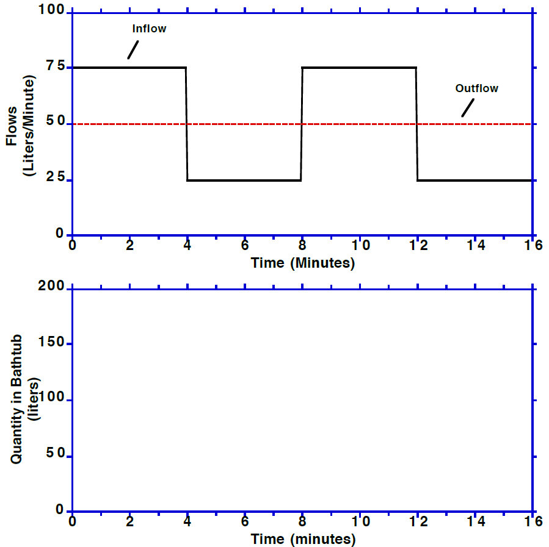
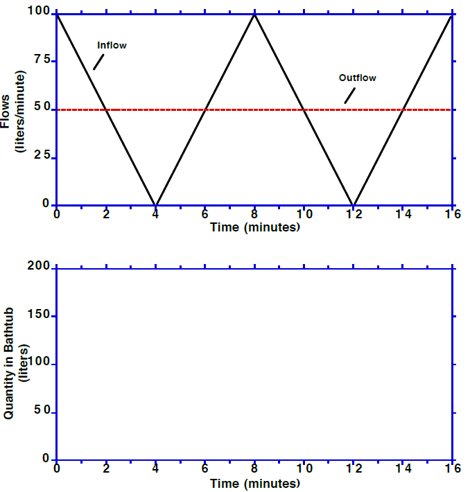
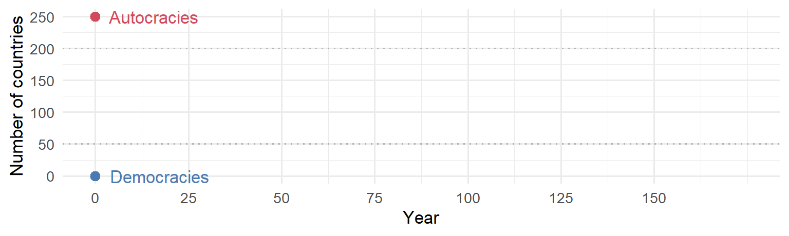
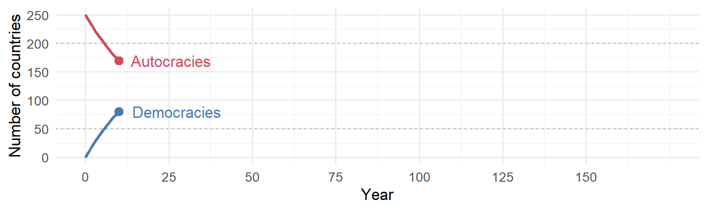
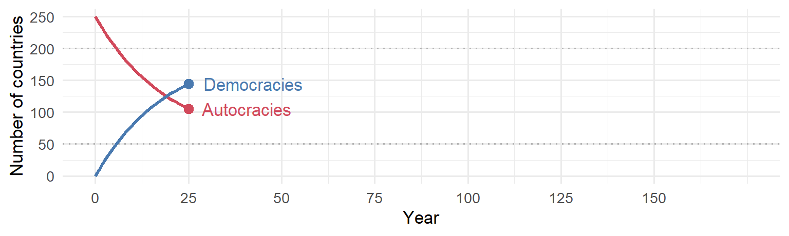
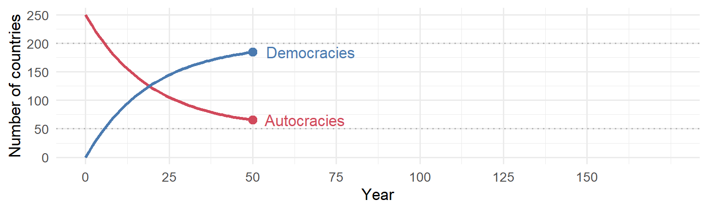
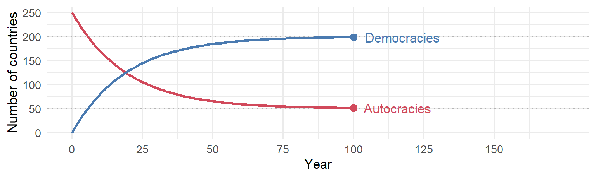
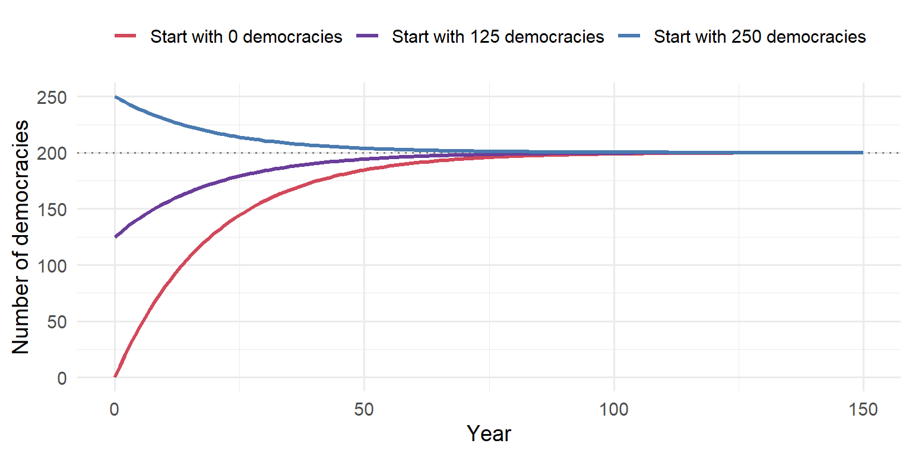
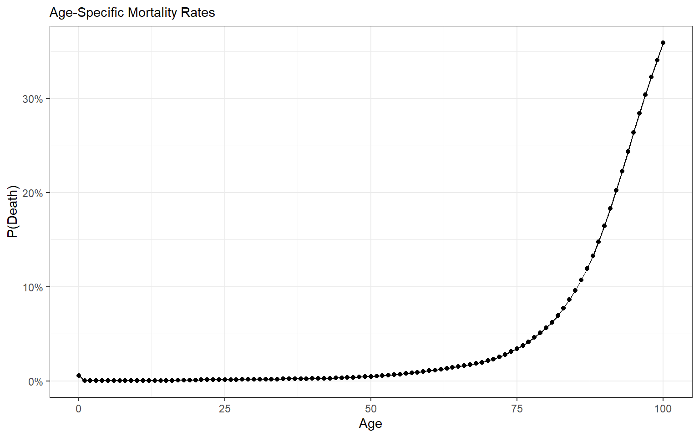
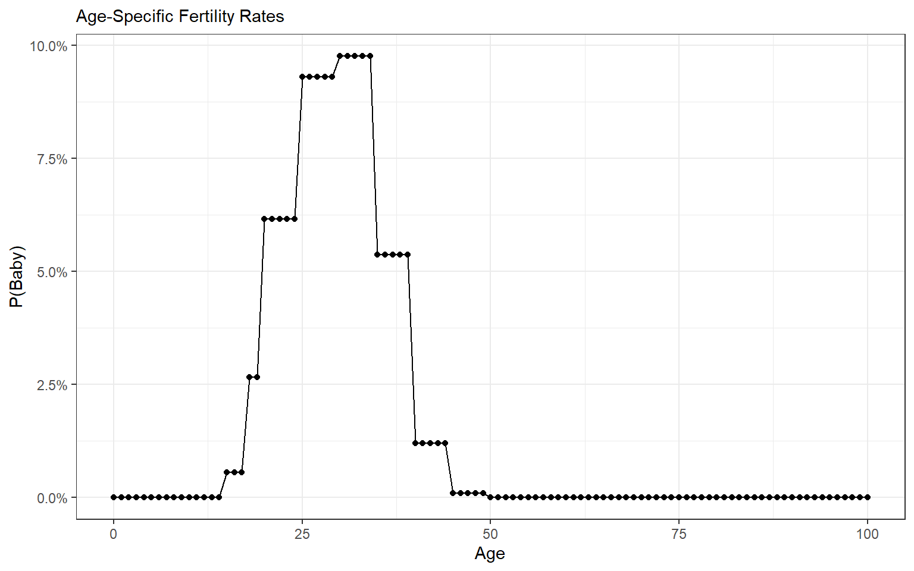

POLS 3220: How to Predict the Future
P0 = transpose(pop)
tfr0 = d3.sum(P0, d => d.fert) // today's total fertility rate (births per woman)
// births from today's women, then deaths, then everyone who survives gets a year older
step = (st, par) => {
const n = st.m.length, m = new Array(n), f = new Array(n);
const births = d3.sum(st.f, (x, i) => x * par.fert[i]);
m[0] = births / 2; f[0] = births / 2;
for (let i = 1; i < n; i++) {
m[i] = st.m[i - 1] * (1 - par.qm[i - 1]);
f[i] = st.f[i - 1] * (1 - par.qf[i - 1]);
}
m[n - 1] += st.m[n - 1] * (1 - par.qm[n - 1]); // the 100+ group is open-ended
f[n - 1] += st.f[n - 1] * (1 - par.qf[n - 1]);
return {m, f};
}
makePar = (tfr = tfr0, dmult = 1) => ({
fert: P0.map(d => d.fert * tfr / tfr0),
qm: P0.map(d => Math.min(1, d.qm * dmult)),
qf: P0.map(d => Math.min(1, d.qf * dmult))
})
today = ({m: P0.map(d => d.m), f: P0.map(d => d.f)})
// summary statistics for a population
describe = (st) => {
const tot = st.m.map((x, i) => x + st.f[i]);
const N = d3.sum(tot), share = tot.map(x => x / N);
let cum = 0, median = 0;
for (let i = 0; i < share.length; i++) {
if (cum + share[i] >= 0.5) { median = i + (0.5 - cum) / share[i]; break; }
cum += share[i];
}
const sumAges = (lo, hi) => d3.sum(tot.slice(lo, hi + 1));
return {N, share, median, old: sumAges(65, 100) / N, workers: sumAges(18, 64) / sumAges(65, 100)};
}
// life expectancy at birth implied by the death rates (average of men & women)
lifeExp = (par) => {
const e0 = (q) => {
let l = 1, e = 0;
for (let i = 0; i < q.length - 1; i++) { const next = l * (1 - q[i]); e += (l + next) / 2; l = next; }
return e + l / q[q.length - 1];
};
return (e0(par.qm) + e0(par.qf)) / 2;
}
ageData = (share) => share.map((s, i) => ({age: i, share: s}))
todayStats = describe(today)
todayE0 = lifeExp(makePar())So far this semester, we’ve covered:
Probability (Part I). How to handle uncertainty.
Wisdom of Crowds (Part II). The value of thinking from multiple perspectives.
Election Forecasting (Part III). Using historical patterns in data to forecast future outcomes.
To date, we’ve mainly focused on short- and medium-term predictions.
But many of the most important prediction problems have longer time horizons.
Here are a few trends where I deeply want to know what’s going to happen over the next few decades:
In the final few days of class, I want to give you some tools for reasoning about these sorts of long-term trends.
Today: thinking in terms of stocks & flows.
A stock measures some quantity at a point in time.
A flow measures the rate of change in a quantity.
A useful metaphor is a bathtub (Sterman 2000).
Predicting stocks and flows can be tricky! Sketch what you think will happen to the stock of water in these bathtubs over time. Both start at 100 liters.


Lots of problems can be described in terms of stocks and flows:
| Stock | Inflow | Outflow |
|---|---|---|
| $ in my bank account | Monthly income | Monthly spending |
| National Debt | Taxes | Government Spending |
| Number of Democracies | Democratization | “Democratic Backsliding” |
| CO2 in Atmosphere | Carbon Emissions | Carbon Sinks |
| Population | Births | Deaths |
Confusing stocks and flows is a common mistake.
For example: debt is a stock, while deficit is a flow.
Let’s start with a world of 250 autocracies and 0 democracies. Year 0:

As democracies accumulate, the inflow shrinks and the outflow grows. Year 10:

As democracies accumulate, the inflow shrinks and the outflow grows. Year 25:

As democracies accumulate, the inflow shrinks and the outflow grows. Year 50:

As democracies accumulate, the inflow shrinks and the outflow grows. Year 100:

Eventually, the system settles into a stable point, called an equilibrium.
In equilibrium, inflows = outflows. Nothing changes from year to year.
Intuitively, if the rate of democratization (4% per year) is 4x the rate of backsliding (1% per year), then in equilibrium there were be 4x more democracies than autocracies.
4:1 = 80%

Every month, 2% of employed workers lose their jobs, and 30% of unemployed workers find a new job.
In equilibrium, what percent of workers are unemployed?
A recession hits, and the job-finding rate falls to 18% per month. What is the new equilibrium unemployment rate?
When should we expect a system of stocks & flows to reach an equilibrium?
The ergodic theorem states that there will be a unique equilibrium for any system that meets the following conditions:
There exists a path from every stock to every other stock.
Flow probabilities are stationary (i.e. unchanging).
No matter how complicated the model gets, if these two conditions hold, there will be a unique equilibrium where all the inflows equal outflows.
Below are the age-specific mortality and fertility rates for Americans, according to the SSA and CDC.


If the current fertility and mortality rates remain stationary, the age distribution will eventually settle into an equilibrium (Arthur 1982).
// a play button + year slider
viewof year = {
const max = 200;
const form = html`<form style="display:flex; align-items:center; gap:14px; font-size:20px; margin:0 auto; width:860px">
<button name="b" type="button" style="width:110px; font-size:18px; padding:4px">▶ Play</button>
<input name="i" type="range" min="0" max="${max}" step="1" value="0" style="flex:1">
<output name="o" style="width:170px"></output></form>`;
let timer = null;
const show = () => {
form.value = form.i.valueAsNumber;
form.o.value = form.value === 0 ? "Today" : `In ${form.value} years`;
};
const stop = () => { clearInterval(timer); timer = null; form.b.textContent = "▶ Play"; };
form.i.oninput = () => { stop(); show(); };
form.b.onclick = () => {
if (timer) return stop();
if (form.i.valueAsNumber >= max) form.i.valueAsNumber = 0;
form.b.textContent = "❚❚ Pause";
timer = setInterval(() => {
form.i.valueAsNumber += 1; show();
form.dispatchEvent(new CustomEvent("input"));
if (form.i.valueAsNumber >= max) stop();
}, 70);
};
invalidation.then(stop);
show();
return form;
}{
const s = projection[year];
return html`<div>${Plot.plot({
width: 900, height: 400, style: {fontSize: "15px"}, marginBottom: 45,
x: {label: "Age", labelAnchor: "center", labelOffset: 38, domain: [0, 101],
ticks: d3.range(0, 101, 10), tickFormat: d => d === 100 ? "100+" : d},
y: {label: null, tickFormat: d3.format(".1%"), domain: [0, 0.015], grid: true},
marks: [
Plot.rectY(ageData(s.share), {x1: "age", x2: d => d.age + 0.9, y: "share", fill: "#4a7ab0"}),
Plot.line(ageData(todayStats.share), {x: d => d.age + 0.45, y: "share", stroke: "#222",
strokeWidth: 1.5, strokeDasharray: year > 0 ? "4,3" : "none", strokeOpacity: year > 0 ? 0.6 : 0}),
Plot.ruleX([s.median], {stroke: "#d1495b", strokeWidth: 2}),
Plot.text([s.median], {x: d => d, y: 0.0145, text: d => `median age ${d.toFixed(1)}`,
dx: 6, textAnchor: "start", fill: "#d1495b", fontSize: 16, fontWeight: "bold"}),
Plot.ruleY([0])
]
})}
<div style="text-align:center; font-size:18px; color:#555">
Dashed line = today's age distribution · Population: <b>${(s.N / 1e6).toFixed(0)} million</b>
· Share aged 65+: <b>${(s.old * 100).toFixed(1)}%</b></div></div>`;
}This has implications for:
the cost of social insurance programs
military recruitment
higher education
the national debt
interest rates
the “gerontocracy”
And the model lets us test out different scenarios. What happens to the equilibrium if fertility keeps falling? If medical advances help Americans live longer? If more immigrants arrive each year?
html`<table class="stat-box">
<tr><td></td><td class="muted">equilibrium</td><td class="muted">today</td></tr>
<tr><td>Life expectancy</td><td><b>${eqm.e0.toFixed(1)}</b></td><td class="muted">${todayE0.toFixed(1)}</td></tr>
<tr><td>Median age</td><td><b>${eqm.stats.median.toFixed(1)}</b></td><td class="muted">${todayStats.median.toFixed(1)}</td></tr>
<tr><td>Aged 65+</td><td><b>${(eqm.stats.old * 100).toFixed(1)}%</b></td><td class="muted">${(todayStats.old * 100).toFixed(1)}%</td></tr>
<tr><td>Workers / retiree</td><td><b>${eqm.stats.workers.toFixed(1)}</b></td><td class="muted">${todayStats.workers.toFixed(1)}</td></tr>
</table>`// the equilibrium: run the model forward for a long, long time
eqm = {
const par = makePar(tfr, dmult);
let st = today;
for (let t = 1; t <= 1000; t++) {
st = step(st, par);
const N = d3.sum(st.m) + d3.sum(st.f); // rescale each year: only the shares matter
st = {m: st.m.map(x => x / N), f: st.f.map(x => x / N)};
}
return {stats: describe(st), e0: lifeExp(par)};
}Plot.plot({
width: 640, height: 470, style: {fontSize: "14px"}, marginBottom: 45,
x: {label: "Age", labelAnchor: "center", labelOffset: 38, domain: [0, 101],
ticks: d3.range(0, 101, 10), tickFormat: d => d === 100 ? "100+" : d},
y: {label: null, tickFormat: d3.format(".1%"), grid: true,
domain: [0, Math.max(0.015, d3.max(eqm.stats.share) * 1.08)]},
marks: [
Plot.rectY(ageData(eqm.stats.share), {x1: "age", x2: d => d.age + 0.9, y: "share", fill: "#4a7ab0"}),
Plot.line(ageData(todayStats.share), {x: d => d.age + 0.45, y: "share", stroke: "#222",
strokeWidth: 1.5, strokeDasharray: "4,3", strokeOpacity: 0.7}),
Plot.ruleX([eqm.stats.median], {stroke: "#d1495b", strokeWidth: 2}),
Plot.text([eqm.stats.median], {x: d => d, frameAnchor: "top", text: d => `median age ${d.toFixed(1)}`,
dx: 6, dy: 4, textAnchor: "start", fill: "#d1495b", fontSize: 15, fontWeight: "bold"}),
Plot.text(["dashed line = today"], {frameAnchor: "top-right", fill: "#555", fontSize: 13, dy: 4}),
Plot.ruleY([0])
]
})Keep in mind the distinction between stocks (the level) and flows (the rate of change).
A system of stocks and flows is ergodic if the flow probabilities remain fixed and there’s a path from every stock to every other stock.
Next time, we’ll discuss positive and negative feedback.
We’ll conclude the semester with lectures on tipping points and path dependence.